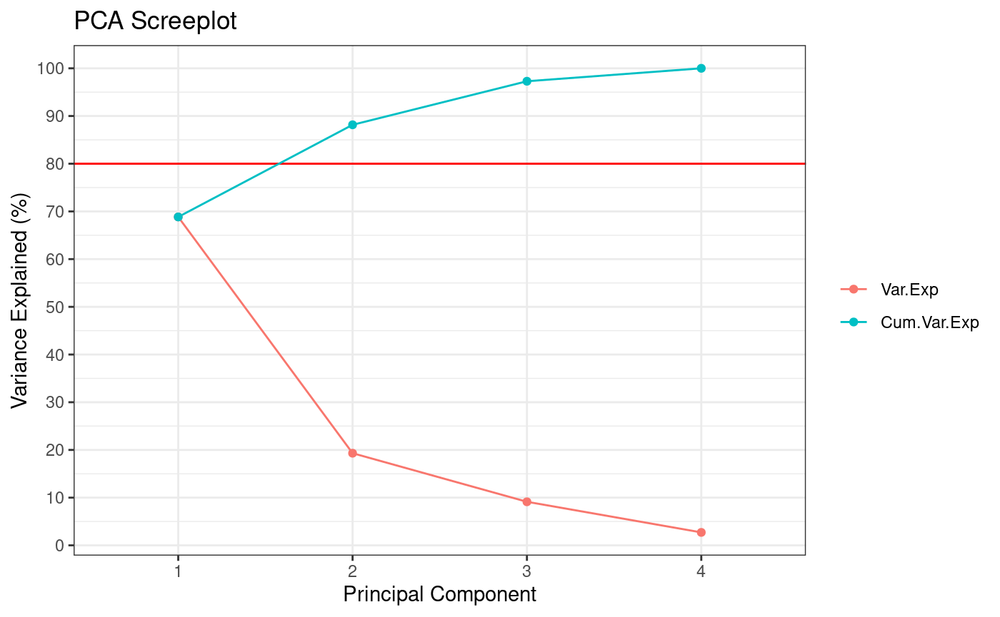
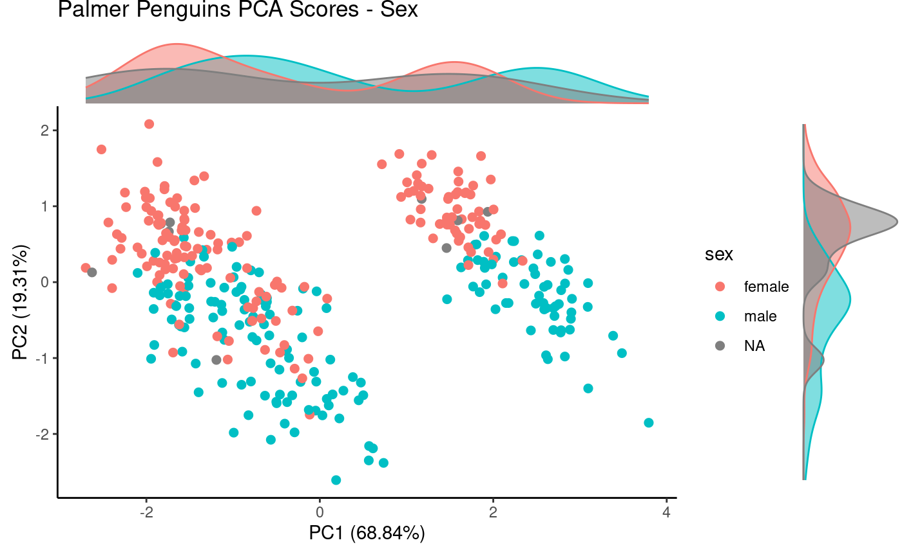

library(Rubrary)
library(dplyr)
#>
#> Attaching package: 'dplyr'
#> The following objects are masked from 'package:stats':
#>
#> filter, lag
#> The following objects are masked from 'package:base':
#>
#> intersect, setdiff, setequal, union
# For `palmerpenguins` install
r = getOption("repos")
r["CRAN"] = "http://cran.us.r-project.org"
options(repos = r)Data
Using palmerpenguins dataset from Allison
Horst.
Load data
Get palmerpenguins data and add a unique ID per
entry.
if (!requireNamespace("palmerpenguins", quietly = TRUE)){
install.packages("palmerpenguins")
}
library(palmerpenguins)
names(penguins)
#> [1] "species" "island" "bill_length_mm"
#> [4] "bill_depth_mm" "flipper_length_mm" "body_mass_g"
#> [7] "sex" "year"
data("penguins")
penguins <- penguins %>%
as.data.frame() %>%
mutate(Sample_ID = paste0(penguins_raw$`Individual ID`, "_", penguins_raw$`Sample Number`))
rownames(penguins) <- penguins$Sample_IDRun PCA
Subset data to numeric only, then run PCA.
num <- penguins %>%
dplyr::select(!c(species, island, sex, year, Sample_ID)) %>%
t() %>%
as.data.frame() %>%
dplyr::select(where(~!all(is.na(.x)))) # Filter out NAs
pca <- Rubrary::run_PCA(
df = num,
summary = T, tol = 0,
center = T, scale = T,
screeplot = T
)
#> ** Cumulative var. exp. >= 80% at PC 2 (88.2%)
Plot PCA
Use resulting prcomp object to plot PCA scores while
annotating by species metadata.
Rubrary::plot_PCA(
df_pca = pca,
anno = penguins,
annoname = "Sample_ID",
annotype = "species",
title = "Palmer Penguins PCA Scores - Species",
label = FALSE,
density = T
)
Same PCA scores plot, but annotating by sex
metadata.
Rubrary::plot_PCA(
df_pca = pca,
anno = penguins,
annoname = "Sample_ID",
annotype = "sex",
title = "Palmer Penguins PCA Scores - Sex",
label = FALSE,
density = T
)